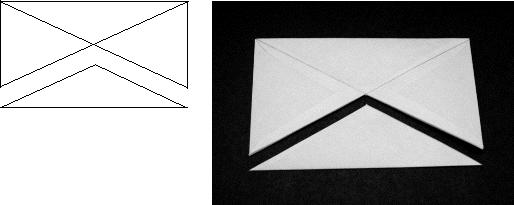

4. Position the envelope so that the longer sides are at the top and bottom.
With the scissors, cut along the diagonals from the bottom corners of the envelope to where the diagonals meet.
The envelope will now be in two pieces. Discard the smaller piece.
|  |
| Cut the envelope into two pieces. |
Return to Sierpinski Tetrahedron Procedure.